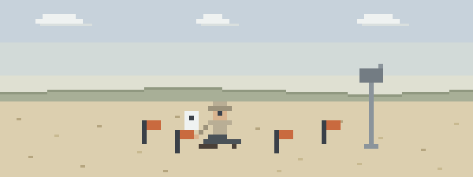

Incidents per unit effort
- Snake country, vegetation sampling. You reach into the sedge for the quadrat frame and something reaches back. Sharpie the swelling edge, note the time, keep the limb still — and skip every remedy the movies taught you.
- June, full sun, no shade on the grid. Your tech has been flagging plots since seven and now she’s answering questions from some other survey. Altered means heat stroke — cooling starts at the plot, not back at the truck.
- The check-in that doesn’t come. Your partner is wading a sample site two drainages over and misses the 1400 call. The protocol you agreed on before the season — window, route, response — is now the whole plan.
Protocol order
Read in this order before the field season:
- Patient Assessment — the system for the crewmate down at a site with no name
- Bites & Stings — snake protocol for people paid to reach into vegetation
- Heat Illness — survey grids don’t come with shade — read the spectrum early
- Provider Safety — solo and two-person crews: one patient stays one
- Evacuation — the check-in protocol is medicine — build it before the season
Then pressure-test it
Interactive scenarios — one decision at a time, tempting mistakes included, debrief at the end:
- Sharpie on the Leg — the bite at boot level, without the folklore
- Cool First — heat stroke at the far plot
- Two Go, One Stays — the overdue-partner problem, worked properly
The certification question, honestly. “Wilderness First Aid” isn’t a regulated credential. No government body defines what a WFA card means — it means whatever the company that printed it says it means. What counts in front of a patient is whether you can do the work. This course teaches the work, free, and issues a record of completion — not a certificate, and we won’t pretend otherwise. If your employer or university requires certified first-aid training in its field safety plan, that requirement stands — take the class it names. This is the personal competence underneath the paperwork: what you actually do while the plan is still ringing phones. If nobody requires you to hold a card, what you need are the skills, not the laminate.
What this is
Fifteen lessons, a 40-question knowledge check, sixteen practice scenarios, a printable field reference card, and a kit checklist. Free, no account, nothing recorded about you, source on GitHub. It teaches decision-making, not hands-on skill — practice the hands-on parts on a real, padded, complaining friend.
Other far-from-help day jobs: forestry workers, timber cruisers & arborists · wildland firefighters & support crews · trail crews, conservation corps & volunteer stewards